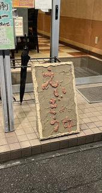
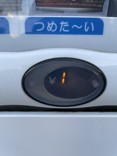
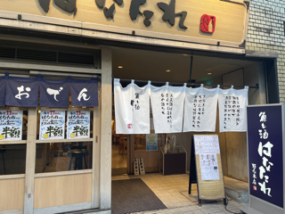

観察
手作り看板
近所の居酒屋にて見つけた、営業を案内する看板。よく見るものとして「一生懸命営業中」といった
ものだが、今回見つけた看板は手作り感溢れるものである。間近で見て思ったが実際に手作りであるように感じる。
このお店での方が作ったのかはわからないが、この看板から伝わるものとしては、丹念に飲食店経営をしていることが
伝わるような、この居酒屋の看板である。

ど定番のサイン
看板の次は面白いサインを見つけようと思っていたが、意外にも身近（家の前）に疑問の生まれる
サインが動販売機にあった。自動販売機に限らず、飲み物の説明としてあるもので
普段飲み物を買うとき意識はしないが、ホットなのかアイスなのか
日本語で表示されている。それも伸ばしを波線にしている。「つめたーい」と「つめた〜い」で何が変わるのか
を考えると、ニュアンスなのか印象か。
個人的な感想として伸ばしを波線にすることで、業務目的な存在から日常に寄り添うものに捉えられる
と考えた。

バ先
バイト先の店頭看板を社員さんにお願いして撮って送っていただいた。
変わった名前の居酒屋だがこの看板を見るだけで洋風でないことは、一目瞭然。
のれんがあるだけでも雰囲気が変わる。

j課題取り組み説明
課題の条件であった通りの説明として、
1枚目と二枚目の写真は自身は撮り、それぞれ自宅近くである。
三枚目はバイト先の方に都合が良いため、お願いし送っていただいた写真。 全て１０月１０日に撮ったものである。